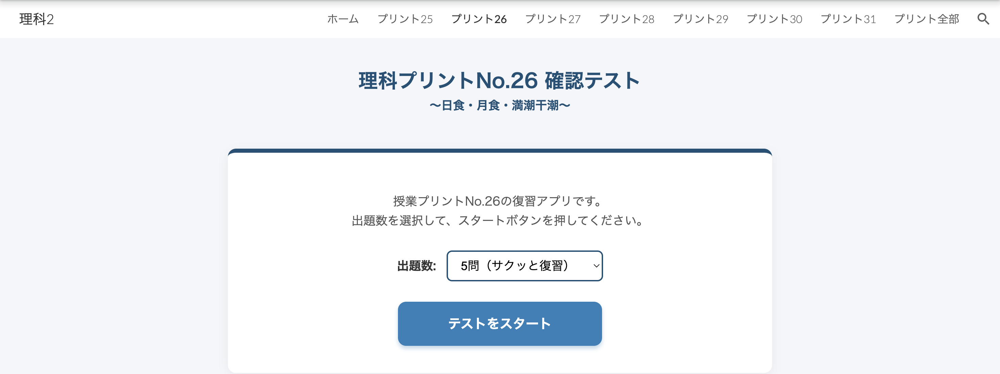

0321横浜隼人 NotebookLM研修資料サイト
AIを活用した次世代の思考整理ツールをマスターする
1. 基本的な使い方
NotebookLMは、手持ちのドキュメントを基にして回答を生成するAIアシスタントです。以下のリンクからアクセスして、ソース（PDF、Googleドキュメント、URLなど）をアップロードしてみましょう。
- ソースをアップロードする。
- Notebookに対して質問や要約の指示を投げる。
- インライン引用を確認し、AIの回答の正確性を裏付ける。
2. 研修資料
本日の研修で使用するスライドおよび関連資料（PDF）へのリンクです。



4. お土産
本日の研修の持ち帰り資料・便利ツールです。
5. 応用プロンプト集
教育や業務の現場で活用できるプロンプトテンプレート集は、ボリュームが大きいため別ページにまとめています。